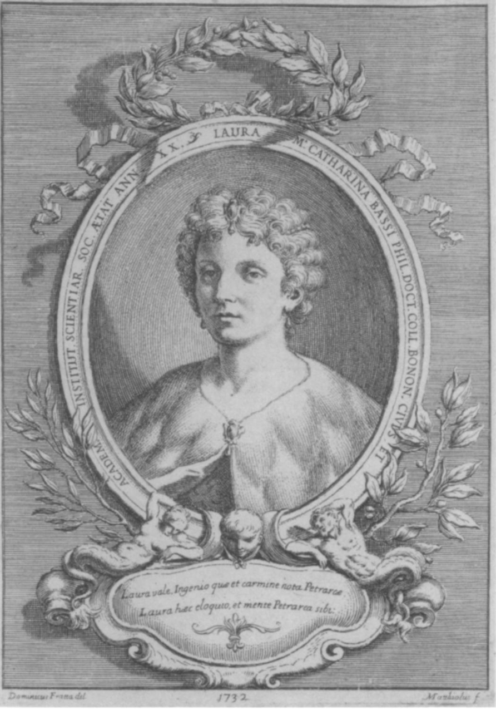
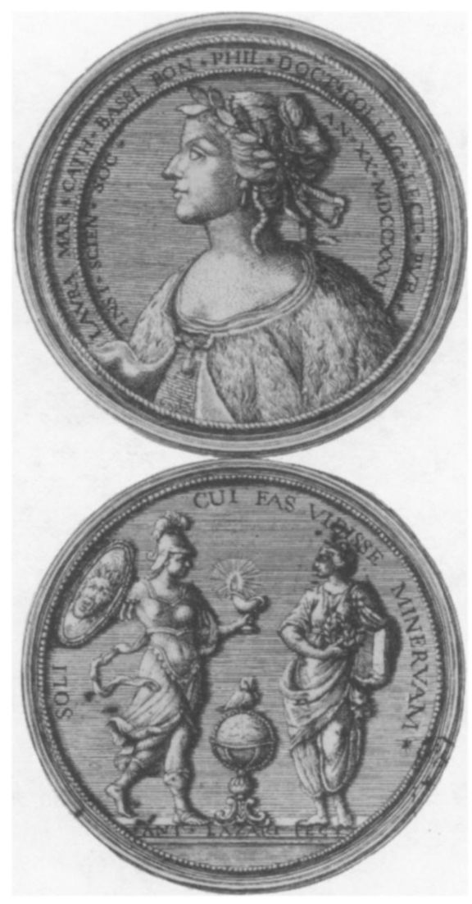

Discovering Bologna
A Journey Through History, Culture & Innovation
Science as a Career in Enlightenment Italy
The Strategies of Laura Bassi
By Paula Findlen
When Man wears dresses And waits to fall in love Then Woman should take a degree.'
IN 1732 LAURA BASSI (1711-1778) became the second woman to receive a university degree and the first to be offered an official teaching position at any university in Europe. While many other women were known for their erudition, none received the institutional legitimation accorded Bassi, a graduate of and lecturer at the University of Bologna and a member of the Academy of the Institute for Sciences (Istituto delle Scienze), where she held the chair in experimental physics from 1776 until her death in 1778. In Germany she was held up as a model to encourage other learned women to receive formal recognition for their studies. In France she earned the praise of contributors to the article on "Woman" that appeared in the Encyclopedia; the Journal des Dames devoted an article to her accomplishments in March 1775. Bassi left behind little of her scientific work, but her correspondence amply testifies to her accomplishments in and centrality to the learned world. She evoked the admiration of Voltaire and Francesco Algarotti, corresponded with natural phi- losophers such as Roger Boscovich , Charles Bonnet, Jean Antoine Nollet, Giam- battista Beccaria, Paolo Frisi, and Alessandro Volta, and numbered her cousin Laz- zaro Spallanzani among her pupils. As Voltaire wrote to her in 1744, "There is no 
Laura Bassi as a Petrarchan muse, 1732. From Biblioteca Comunale dellArchiginnasio, Bolog Gabinetto Disegni e Stampe, Collezione dei ritratti, A/5, cart. 30
Bassi in London, and I would be much happier to be added to your Academy of Bologna than to that of the English, even though it has produced a Newton." 2
Bassi is one of the most interesting women natural philosophers of the early mod- em period.3 During her long tenure as a professor at the University of Bologna and the most prominent female member of Italy's leading scientific society, she played a central role in the introduction of new forms of learning into the university science curriculum and in the constitution of a network of experimenters that connected Italy to the scientific culture of France and England. Other women natural philosophers published more than she did-for example, Margaret Cavendish , Maria Sybilla Mer- ian, and Voltaire's celebrated companion, Emilie du Chatelet-but Bassi was best at inserting herself within the academic world of science. This essay explores the conditions that made her success possible. While considering the limitations that the social and institutional framework of science placed upon Bassi as a female prac- titioner in light of the cultural expectations of learned women in Enlightenment Italy, I also wish to indicate how Bassi used the patronage system and her unique role within it as both patron and emblem of the new science to carve a niche for herself in the scientific community of the eighteenth century.
Bassi's activities began in the period that ushered in early discussions about New- ton, in the form of poems about the Opticks and cautious explorations of the Prin- cipia; by the time she died the general principles of Newtonianism had become a basis for explorations of all facets of the natural world. When Bassi first became associated with the University of Bologna, Newtonianism had only just begun to enter Italian academic discourse. Bassi studied primarily Aristotelian and Cartesian philosophy prior to receiving her degree, and she did not explore Newton's thought until the mid 1730s, under the tutelage of the mathematician Gabriele Manfredi. She became one of the first scholars in Italy to teach Newtonian natural philosophy, beginning with her lectures on the less controversial Opticks in the late 1730s and continuing with the course in experimental physics that she conducted in her home and ultimately at the Institute. In 1749 she presented a dissertation on the problem of gravity and in 1763 one on refrangibility before her colleagues at the Institute; in 1757 she published a paper on hydraulics in the Commentaries of the Bolognese Institute and Academy for Sciences and Arts that worked out certain theorems posed by Newton. From the 1760s onward, in collaboration with her husband Giuseppe Veratti, she made Bologna a center for experimental research in electricity, attracting the interest of well-known scholars of this subject such as Abbe Nollet.4 Right until the end of her career, she made the dissemination of Newtonian ideas one of her principal goals. As late as 1774 she lectured on the work of Stephen Hales, well known for his applications of Newtonian ideas to explorations of fluids in works such as his Vegetable Staticks (1727).
Despite Bassi's importance to the scientific culture of Enlightenment Italy, we know very little about her intellectual activities because so few of her dissertations and lectures have survived. In addition to the forty-nine theses printed for her doc- toral defense and various poems, Bassi published only four works in her lifetime: De acqua corpore naturali elemento aliorum corporum parte universi (1732), De aeris compressione (1745), De problemate quodam hydrometrico (1757), and De problemate quodam mechanico (1757). Another was published posthumously: De immixto fluidis aere (1792). These represent only a fraction of the dissertations that she prepared and defended annually at the Institute academy. And, as Alberto Elena observes, they tell us very little about Bassi's experimental and pedagogical activ- ities.5 Unlike Emilie du Chatelet, Bassi did not derive her fame from her publica- tions. In addition to the normal obstacles that faced women writers, she had to divide her time between teaching, experimenting, and raising a family of eight children (five of whom survived to adulthood).6 Equally important, Bassi did not need to publish to stake her claim within the community of natural philosophers. Instead, the unique opportunities that early modem Italian academic culture afforded Bassi made it possible for her to achieve recognition for her work in physics and mathe- matics through her actions rather than her pen. Her correspondence and contempo- rary reports of her activities allow us to follow her career as a natural philosopher in Enlightenment Italy.
By the early eighteenth century science increasingly was a legitimate pursuit for exceptional women of unquestionable virtue. Women had become an audience for philosophical speculations, and their role as patrons and consumers of natural phi- losophy was increasingly acknowledged by contemporaries. The popularity of sci- entific activities in the Baroque Italian courts gave noblewomen the opportunity to observe and moderate the culture of experimentation and debate. In this context, women such as the grand duchess of Tuscany, Christina of Lorraine, and Queen Christina of Sweden emerged as patrons of science.7 The visibility of female patrons at court and the expansion of roles for women in the literary, artistic, and scientific academies of Italy set the background for the increased participation of socially prominent and intellectually gifted women in natural philosophy. Equally important were the possibilities that Cartesian philosophy offered. Descartes's famous dedication of his Principles of Philosophy (1644) to Elizabeth of Bohemia was seen by a number of scholars, male and female, as clear evidence that women were capable of philosophizing. Taking Descartes's praise of Elizabeth of Bohemia literally, Giu- seppa-Eleonora Barbapiccola translated the work into Italian in 1722 in order "to make it accessible to many others, particularly women, who, as the same Rene says in one of his letters, are more apt at philosophy than men."8 Bassi, in her studies of Cartesian philosophy in preparation for her thesis defense, may even have read Barbapiccola's translation. Certainly her family and mentors acted in accordance with these principles when they chose to make natural philosophy an important part of her education. Learned women had long been known for their skill in ancient languages and, in a city such as Bologna, law. Mastery of natural philosophy, partic- ularly the tenets of the new scientific learning, added a novel dimension to this topos.
During the same period, Italian intellectuals explored the desirability of women's education. Most famously, the Accademia de' Ricovrati, known for its admission of women, conducted a series of debates in 1723 about whether "women should be allowed. to study Sciences and the Fine Arts" that expressed well the range of op ions of this issue.9 While many natural philosophers continued to oppose the entry of women into academic discourse, others, such as the president of the Accademia de' Ricovrati, the anatomist Antonio Vallisneri, encouraged their participation. Thus the Academy of the Institute for Sciences had important precedents to draw upon when it chose to add several women to its ranks, first among them Bassi. While claiming to imitate the new scientific societies such as the Royal Society, the Paris Academy of Sciences, and the Accademia del Cimento, none of which included women as members, the Institute academy nonetheless acknowledged its debt to the flourishing tradition of Italian academies that made the presence of women in their assemblies a necessary part of their composition.
The presence of women within academic institutions in Italy stood in marked con- trast to the situation elsewhere. In countries like France women's participation oc- curred primarily in the salons. Excluded from the universities, women were allowed no role in organizations such as the Paris Academy of Sciences. As Francois Poulain de la Barre wrote in 1673, "They [men] founded Academies to which women were not invited; and in this way [women] were excluded from learning as they were from everything else." In contrast, the Italian academies welcomed French women of learning, capitalizing on the dearth of possibilities within French academic culture. Upon hearing of Emilie du Chatelet's admission to the Institute academy in 1746, one philosophe lamented:
When Bologna proudly displays, in Italy, Its register adorned with the fair name of Emilie Why is the fair sex, so greatly loved by us, Excluded, in France, from the Academy?
While other regions discarded the Renaissance model of the academy as a place in which learned men and women of high social standing could interact, Italian practice enhanced this image. Rather than creating a salon culture that served to formalize the separation of the world of the academies from the society of learned women, scholars in numerous Italian cities formed academies that linked the university, the salon, and the leisure activities of the urban patriciate. In Bologna, Bassi soon be- came the centerpiece of such a network. Her presence strengthened preexisting ties between different sectors of the political and cultural elite and contributed to the enhancement of the city's position within the Republic of Letters.
While the academies and salons provided a setting in which men and women intermingled, enacting versions of the conversations fictionalized in works such as Bernard Le Bovier de Fontenelle's Conversations on the Plurality of Worlds (1686) and Algarotti's Newtonianism for Ladies (1737), few women had access to the uni- versities in any capacity. Despite the fact that the University of Bologna celebrated a handful of women who had either attended or given lectures in the Studium during the Middle Ages, no woman in any part of Europe had been offered a degree before 1678 or an official teaching position before 1732. Most universities implicitly ex- cluded women from any form of participation and would continue to do so until the late nineteenth and twentieth centuries. Women's learning was represented as a sep- arate enterprise from the education of men. In the early seventeenth century, when the theologian Gisbert Voet allowed Anna Maria van Schurman to attend his lectures at the University of Utrecht, he maintained the tradition of having her listen behind a curtain in order to separate her from the male scholars."1 Bassi's integration into the university culture of Bologna upon the receipt of her degree marked a departure from these practices. Benefiting from earlier traditions, which permitted women oc- casional access to the classroom, Bassi nonetheless was distinguished by the per- manency of her position and by the fact that she performed many of the same func- tions as her male colleagues, as a salaried professor, lecturer, and experimenter.
The attention showered upon Bassi was the culmination of several abortive at- tempts to install a woman within the Italian university system. In 1678 over twenty thousand spectators crowded into Padua to see the Venetian noblewoman Elena Cor- naro Piscopia receive a degree in philosophy. Immediately afterward, the rectors of the University of Padua agreed to admit no more women; when Piscopia died in 1684, she was celebrated as the first and, for the time being, the last female graduate of that university. By the 1720s the leading citizens of Bologna had begun to conceive of the idea of having their own woman graduate. The city abounded with learned women such as Teresa and Maddelena Manfredi, sisters of Eustachio and Gabriele and their assistants in matters astronomical, or the bella cartesiana, Laura Bentivoglio Davia, who so disparaged "the noisy conferral of the doctorate" on Bassi However, the first attempt occurred in the domain of law rather than natural phi- losophy. In 1722, ten years before Bassi embarked on her career as a public intel- lectual figure, the Bolognese noblewoman Maria Vittoria Delfini Dosi defended sev- eral legal theses at the Spanish College. While subsequent attempts on the part of her father to convince the University of Bologna to grant her a degree in jurispru- dence failed, Delfini Dosi's public display of learning reopened the debate about the place of women in academic culture in Bologna. By the 1750s two women had received degrees-Bassi and Cristina Roccati-and three-Bassi, the mathemati- cian Maria Gaetana Agnesi, and the anatomist and wax modelist Anna Morandi Man- zolini-had been offered teaching positions. Bologna, as one critic complained, now had "a platoon of women teachers.
Despite this evaluation, Bassi was the only woman in the eighteenth century whose circumstances allowed her the opportunity to engage fully in the activities that her male counterparts took for granted. Situated in a climate in which the idea of a "career" as an experimental philosopher was only gradually beginning to emerge, she took advantage of the ambiguous parameters of the scientific community and of the veneration accorded learned women to extend the range of her responsibilities.14 In less than a century, the patronage that women offered to the sciences and their growing presence as spectators and members of various learned academies had opened the way to their participation. And Italy, more than any other region in Enlighten- ment Europe, offered learned women diverse circumstances in which to exercise and display their erudition.
BASSI TAKES HER DEGREE
When Laura Bassi accepted the invitation to defend forty-nine theses in front of the notables of Bologna on 17 April 1732, and the subsequent offer of a position as a university lecturer, she entered a complex social world. The scientific culture of early modern Europe was constituted within a dense network of patrons, brokers, and clients whose shifting relationships forged the boundaries of the learned commwunity. " Aspiring natural phil without patrons than they could lay claim to the title of "philosopher" without having read Aristotle. Social connections in conjunction with learning made acceptance into the scientific community possible; they mediated the awarding of university positions and promotions and paved one's entry into the courts, salons, and academies, where knowledge was put on display in front of a largely patrician audience.
Within this system, women were perceived primarily as facilitators. Like Bal- dassar Castiglione's ideal female courtiers, their presence provided a necessary im- petus to conversation, but they spoke rarely, if at all. While early modern culture recognized, indeed encouraged, female patrons of science, it accommodated women who sought rather than dispensed patronage less easily. Bassi was precisely this sort of individual. Genuinely committed to teaching and research, she attempted to build a career out of her position by using the same patrons and institutions as her male counterparts. While always acknowledging her special status, she nonetheless re- fused to accept the limitations placed upon her. Like Madame du Chatelet, she con- tinued to profess astonishment at the fact that while women were accepted as rulers in several countries, "there is none in which we are elevated to think," and she devoted her life to making Bologna an environment in which at least one woman contradicted this general rule.'6
The scientific climate of Bologna in 1732 was particularly conducive to public and institutional recognition of a learned woman, especially one versed in the latest mathematical and experimental philosophies. The final decades of the seventeenth century had witnessed a major decline in the international reputation of the University of Bologna, and even the efforts of committed reformers like Anton Felice Marsili to revitalize the curriculum had yielded disappointingly few results and little ac- knowledgment from the outside world. The founding of the Institute for Sciences by Luigi Ferdinando Marsili in 1714 institutionalized these reforms, establishing a teaching and research facility specifically designed to supplement the traditional curriculum, particularly in the experimental sciences.'7 Where late seventeenth-century acade- mies had failed, the Institute succceeded, bringing Bologna again to the attention of the learned world through its importation of the best ideas of the new philosophy to Italy. In 1728 the young Algarotti first replicated Newton's optical experiments before the Institute members, the beginning of his efforts to introduce Newtonianism into Italy. Best known for his Newtonianism for Ladies, completed at Cirey in the company of Voltaire and Chatelet, Algarotti was an active participant in the diffusion of Newtonianism in Italy. While we most often think of this work in relation to Chatelet's translation of Newton's Principia, we should not neglect Algarotti's ac- tivities preceding the trip to France. Algarotti included a portrait of Chatelet in the engraved frontispiece, but he made several references to Bassi in the text. Completed only four years after Bassi had defended several Newtonian theses in public, and five years after Algarotti had witnessed her degree ceremonies (about which he wrote several poems), Newtonianism for Ladies was as much a tribute to Bassi and the Institute as it was to the activities of the French philosophers.18
While the Institute commenced with a great flourish, the death of its principal patron Marsili in 1730 and the lack of tangible results had diminished its public splendor. This intellectual torpitude was further exacerbated by the flagging fortunes of the Bolognese patriciate. By the 1720s the ranks of the major families-the Al- drovandi, Bentivoglio, Cospi, Paleotti, and Ranuzzi, to list a few-that had domi- nated the political culture of the city had thinned greatly.19 Their replacement by members of the minor nobility only furthered the perception that Bologna was no longer the splendid center it once had been. Thus the university, the academy, and the city needed Bassi as much as she needed them. Publicizing Bassi's accomplish- ments, and enhancing them beyond anything achieved by earlier learned women, would add luster to the reputation of Bologna.
The daughter of a lawyer, Bassi received her early tutelage at home from Gaetano Tacconi, the family physician, a professor at the university, and a member of the Institute academy. As Bassi's accomplishments grew, pressure for her to appear in public mounted. Bassi was reputed to be a "monster in philosophy"; her fluency in Latin as well as Cartesian and Newtonian philosophy was noted by many contem- poraries, among them the poet Giampietro Zanotti, who proclaimed her Latin to be better than his Bolognese. For Bassi and most educated women in Italy, science was not an alternative to classical learning, as it often was advertised in France and En- gland, but its supplement; this provided the necessary element of continuity between Renaissance and Enlightenment views of learned women.20 In the early months of 1732 Tacconi finally allowed a select group of professors and gentlemen, among them the secretary of the Institute, Francesco Maria Zanotti, and the new archbishop of Bologna, Prospero Lambertini, to hear Bassi dispute privately on various subjects. As news of her remarkable erudition spread, she "found herself constrained to make almost a continuous spectacle of herself in the City." Cardinal Lambertini soon per- suaded her to appear in public, and Tacconi and Zanotti proposed her election to the Institute academy, to which she was aggregated on 20 March 1732. Less than a month later, on 17 April, she engaged in a public dispute with five university pro- fessors, among them the physicist-chemist Jacopo Bartolomeo Beccari and Gabriele Manfredi.21
From the moment that Bassi agreed to participate in the public debates, her social position shifted. No longer simply a woman whose learning made her an object of curiosity and a participant in the civil discourses of the urban patriciate, she had become the symbol of the scientific and cultural regeneration of the city. The con- ferral of a degree on 12 May and the Senate's decision to award her a university chair on 29 October 1732 formalized the terms of the new relationship. Detailed reports of the defense, the degree ceremony, and her first lecture as a university professor illuminate the emergence of Bassi as a public figure. All these events were attended not only by the university faculty and students, but also by the principal political and religious figures of the city-the papal legate and vice-legate, the arch- bishop of Bologna, the gonfaloniere, the elders (Anziani), senators, and magistrates. Additionally, "all the Ladies of Bologna and all the Nobility," along with foreigners and curious onlookers, filled the rooms to hear her speak.22 The composition of the audience testified to the close ties between the academic, civic, and patrician life of the city and underscored Bassi's importance to all three domains. In her passage from private citizen to public ornament, Bassi had become an emblem of Bologna's efforts to regain its foothold in the learned world.
Contemporary descriptions and illustrations give us a fairly precise idea of the performative nature of these events. The defense and the degree ceremony occurred not in the Archiginnasio, home to the Studium, but in the Palazzo Pubblico, seat of the local and papal government.23 There, accompanied for decorum's sake by Count- ess Maria Bergonzi Ranuzzi and Marchesa Elisabetta Ercolani Ratta, two prominent noblewomen, Bassi engaged in her first public disputes. Arriving at the Palazzo Pubblico, Bassi went first to the quarters of the current gonfaloniere, Filippo Al- drovandi, where she was joined by the archbishop, the legate Girolamo Grimaldi, Cardinal Melchiorre de Polignac-a dignitary visiting Bologna on his way from Rome to Paris-and other "eminences." From these rooms she made her way to the Sala d'Ercole, where the degree was awarded by the chancellor of the Studium, Ales- sandro Formagliari, and the prior of the college, Matteo Bazzani. Both ceremonies ended with the retreat of the young "philosophess" (filosofessa) to the gonfaloniere's quarters within the Palazzo Pubblico, where she was privately feted, accompanied by "all the Ladies." In between her arrival and departure, Bassi traversed the space separating her podium from the canopied throne (baldacchino) on which Archbishop Lambertini and Cardinal de Polignac were seated in order to pay her respects and receive their compliments .24
In an oration written especially for the degree ceremony, Matteo Bazzani praised Bassi for displaying her talents "in the most prosperous civic theater." Drawing at- tention to the long heritage of learned women associated with the University of Bo- logna, he presented Bassi as the culmination of a tradition that stretched back to the early days of the university in the later Middle Ages. As Bassi's colleague at the Institute, Beccari, was later to write to Maria Gaetana Agnesi when she was offered an honorary position at the university in 1750, "From the most ancient times Bologna has had people of your sex [lecture] from the public chairs."25 Thus Bassi was invited to enhance and reconstitute this tradition in 1732. Her skills in ancient languages as well as modern sciences made her eminently qualified to fulfill her role.
Like Bazzani, Bassi was extremely conscious of her audience and its expectations. In the opening of her thesis defense she acknowledged frequently the presence of all the principal parties who had made the dispute possible. More pointedly, in the course of her first public lecture after the conferral of a university chair, on 18 De- cember 1732, Bassi made particular reference to the governing body as patron of her efforts: "the magnanimity of the Senate raised me, beyond what I asked for and dreamed of, to the highest dignity of speaking in public," she proclaimed. The active role of the Senate in facilitating Bassi's position was confirmed by her biographer Giovanni Fantuzzi, who described it as "a spectator up until this [moment]," inter- vening with the offer of a position to prevent her from lapsing into "leisure and mediocrity" only after witnessing the success of her defense.26 While her tutor Tac- coni and his circle of friends, among them the influential Lambertini and Zanotti, had first brought this remarkable woman to the attention of Bologna, the Senate, as the body that governed all university appointments, gave her an official position.
MISPLACED EXPECTATIONS?
While offering Bassi a permanent role in the academic culture of the city, the Senate initially defined her duties as a lecturer restrictively. As one 1778 eulogy to Bassi described it, they "wished to inscribe her in the roll of Professors of Philosophy without the burden of exercising this commitment." During the deliberations about her position, beginning on 25 August and concluding on 29 October 1732, the Senate voted to award Bassi an annual stipend of 100 scudi "on the condition, however, that she should not read in the public schools except on those occasions when her Superiors commanded her, because of [her] Sex." The dates for these lectures were to be determined jointly by the papal legate and the gonfaloniere. Less than a year later, the governing board of the university (Assunti di Studio) recommended to the city government (Reggimento) that Bassi give one lecture "every Trimester."27 Quite likely they imagined that she would speak at fall convocation, at the public anatomy (usually held in early February), and at the conclusion of the academic year in June. Thus the appearance of the local celebrity marked the rhythm of the academic year.
The nature of the events, both public and private, at which Bassi was invited to appear illustrates well the expectations her patrons had of her. Within days of the degree ceremony, Bassi entertained the visiting Cardinal de Polignac by disputing with four doctors from the university. On 15 June 1733 she participated in a public debate with Giuseppe Azzoguidi on "Poisons and Their Antidotes." From 1734 until 1778 she appeared annually as one of the disputants at the famed carnival anatomy and participated in 105 public disputes formally mandated by the university. From 1746 until 1777 she presented one formal dissertation yearly at the Institute academy as part of her responsibilities as a member of its elite core, the Benedictines (Be- nedettini). Many of these coincided with "the occasion of the Public Academies," held periodically by the Institute, to which nonmembers could come.28 This pattern of activity, dictated by the institutional calendar, was occasionally punctuated by singular events, command performances at the request of patrons. For example, the arrival of a new legate in 1734 and the election of Carlo Grassi in 1745 were note- worthy enough to demand Bassi's presence. Similarly, the awarding of a degree to Cristina Roccati in 1751 and the fortieth anniversary of the Institute in 1754 required her participation. Had Maria Gaetana Agnesi chosen to come to Bologna to accept her honorary chair in mathematics in 1750, she certainly would have engaged in a public dispute with Bassi; this was surely one of the reasons why Benedict XIV and the members of the Institute were so keen on affiliating Agnesi with the scientific institutions of Bologna. Undoubtedly they were disappointed when the opportunity to pit the two most famous women natural philosophers in Italy against each other did not come to pass.29
In addition to her participation in various ceremonies, Bassi attended important social gatherings for the nobility. "All the gentlemen of Bologna make a great dis- play of this girl, and depict her everywhere as the miracle of our age," wrote Gio- vanni Bianchi from Rimini in 1732. Friends such as the noblewoman Elisabetta Ratta had informal literary gatherings at their homes, to which Bassi was invited. Her close association with local poets like the Zanotti brothers made her sought after for her eloquence as well as her learning. Patrons like Senator Filippo Aldrovandi, gonfa- loniere when Bassi received her degree, hosted well-publicized "Sunday evenings" for the Bolognese patriciate. As the Avvisi di Bologna reported in 1736, on one such evening in November Bassi debated both Matteo Bazzani and Francesco Maria Za- notti, alternately in Italian and Latin, in front of "all the Nobility in formal attire," including "over 120 Ladies." Appearing at the conclusion of the "noble Symphonies in diverse parts of the Palace," Bassi received the "universal applause" of the Bo- lognese elite as well as the "many Foreign Nobles" present.30 Despite Bassi's initial reticence about appearing in public, after receiving her degree she was quickly in- tegrated into the social circuit of the city.
Most revealing, however, was the frequency of her appearance at the carnival anatomy. The anatomy was a central feature of the public life of the university; like Bassi's degree ceremony, it enhanced the ritual life of the city. Unlike Bassi's degree ceremony, it was performed annually-the one dissection during the year that was open to anyone able to buy tickets. While other professors rotated in and out of the lectureships assigned to the public dissection, Bassi's presence was essential to the success of this popular event. Lasting ten to fifteen days, the annual dissection, held before Lent, entailed an elaborate ceremonial in which the leading professors, sen- ators, and dignitaries of the town participated. Formal invitations were sent to prom- inent members of the community and important foreigners.3' In addition, a riotous crowd of carnival revelers filled the anatomy theater with shouts and jeers as they watched the local intellectuals try to acquit themselves on any subject deemed worthy of conversation, as well as the proposed topic of the anatomy. The fortunes of the carnival anatomy curiously paralleled Bassi's own. Revived just when the univer- sity's reputation had reached its nadir, the anatomy was perceived as both an "honor to the Studium" and an "attraction to foreign scholars."32 Given its significance, Bassi's presence was imperative in the eyes of the Senate, once her position made such public performances possible.
Her first appearance in this setting occurred on 23 February 1734
(see Figure 1). Domenico Gusmano Galeazzi presented a dissertation
on sight, De visu. The new legate, Giovanni Battista Spinola, had
arrived in the city shortly after New Year's. Accompanied by the
gonfaloniere and the Anziani, Spinola attended the first and last
lectures and the one at which Bassi debated Galeazzi: "With most
subtle and learned arguments and rare expositions of experiments
regarding the Sense of Sight, she demonstrated a high and profound
understanding of this material, rousing widespread applause from
the large Audience, most especially from the most Excellent signor
Cardinal Legate, who understood for the first time the great
Virtue and Knowledge of the lauded Dottoressa." What the official
acts of the governing body of the uni- versity did not mention,
however, were the "many Foreigners and a great many Maskers
present."33 While the content of her disputes may have appealed
chiefly to a small learned constituency able to follow the
intricacies of academic Latin, among them the legate and the
archbishop, her presence at the anatomy only heightened the

Figure 1. Laura Bassi at the camival anatomy, 1734. From Archivio di Stato, Bologna, Insignia degli Anziani, Vol. 13, c. 105.
perception of the event as the epitome of the world tumed upside down. For the infinity of Foreigners and People" who crowded into the theater on the second floor of the Archiginnasio, only in the carnival setting of the public anatomy could a woman truly shake off the weight of custom and become learned. Just as members of the audience, in the spirit of carnival, cloaked their true identities by wearing masks, Bassi too "disguised" herself with her knowledge. The organizers of the public anatomy manipulated this tradition to their advantage, linking the 'virtue" of Bassi's presence in the Studium with the "honor" of the carnival festivities.34 Since this was the one time during the year when the general public could see an anatomical dissection and Europe's only female professor, it was a rare occasion indeed.The Senate's decision to restrict Bassi's public appearances to ceremonial occa- sions, ratione sexu, matched well the cultural image of Bassi developed by her ad- mirers in the first years of her lectureship. Returning to the degree ceremony itself, we can see the crafting of an image at work. Despite reports that Bazzani "awarded her a degree according to the usual forms," the ceremony diverged in several im- portant ways. Bassi received her degree gratis, without any of the presents, pay- ments, and banquets that graduates customarily gave their professors and patrons. Rather than giving gifts, as tradition dictated, she was herself the recipient of lavish presents: the silver, jewel-encrusted crown of laurels-a gift of the Countess Ra- nuzzi that replaced the traditional beret of male graduates, the medal struck for the occasion (see Figure 2), and the poems written in her honor. Bazzani, putting the 
Figure 2. Laura Bassi depicted as Minerva. From Giovanni Fan Laura Maria Caterina Bassi Veratti (Bologna, 1778). (By permission Bologna.)
silver laurels upon her head, compared her transfigurati Ovid's chaste Daphne, transformed into a laurel tree to f of her lover Phoebus. 35Other gifts, while part of the customary degree ceremony, took on added sign icance. Along with the crown of laurels, Bassi also received a ring and an ermine cape. Placed on her "connubial finger" by the prior Bazzani, the ring signified not simply her membership in the academic community but her virtual "marriage" to the city and the Studium. Writing to Algarotti, Elisabetta Ratta described "the most vigorous praise of our Beccari towards the young scholar, who never finished without saying: egregie, virgo sapientissima, egregie" during the thesis defense .3 Recalling both the religious tradition of women in orders as brides of Christ and the civic tradition of virgins whose chastity cemented the foundations of republican govern- ment, Bassi, as a "most learned virgin," found herself fulfilling these ancient topoi. Given the continued strength of such bonds, even in the eighteenth century, the murmurings against Bassi's decision to marry Giovanni Giuseppe Veratti in February 1738 were quite understandable. "Thus you would blemish your glory? [Dedisti ma- culam in gloria tua?]," accused one anonymous pamphleteer.37
The association between female learning, virtue, and sanctity was still strong in the eighteenth century, though not as pervasive as it had been in the fourteenth through the seventeenth centuries. But learning and virginity did not only suggest sanctity. They also imbued a woman with the qualities of Minerva. Numerous elogies pre- sented Piscopia as the "Venetian Minerva," and Voltaire described Chatelet in sim- ilar terms. Under the portrait commissioned by the Accademia degli Infecondi of Rome on the death of Piscopia in 1686, the inscription read, "Surely you believe the image which you see to be Minerva? [Quam cernis pictam ne credas esse Mi- nervam?].,38 Bassi, the "marvel of her sex and an ornament of our Patria," fulfilled a similar role in the eyes of her admirers. As the inscription on the obverse of the medal commemorating her degree declared: "Soli cuifas est videsse Minervam" (see Figure 2). Contemporaries must have associated this vision of Bassi with the frequent appearance of Minerva in the allegorical imagery of the Studium and the Institute.39 Casting her light across the city, Bassi illuminated the path to wisdom, so recently obscured, permitting the citizens of Bologna once again to "see Minerva."
Described variously by contemporaries as the "new light of philosophy," the "lu- minous mirror of Science," and the "alumna of the Muses," Bassi became the em- blem of scientia in all its forms. Compared to the sixteenth-century poetess Vittoria Colonna and most frequently to Petrarch's Laura, whom she surpassed by combining a learning and eloquence equal to Petrarch's with womanly grace, Bassi was the quintessential Enlightenment Muse (see Frontispiece).40 With this designation came a variety of social burdens. Not only the subject of numerous poems, among them Algarotti's famous "Non la lesboa," Bassi also was expected to write poetry for important public functions. In 1737 she contributed to a volume of poems, collected by Giampietro Zanotti, for the wedding of Carlo Emanuele, King of Sardinia, and Elizabeth of Lorraine; the same year she repaid Maria Ranuzzi's gift of the silver crown of laurels (laurea d'argento) by writing poems for the wedding of the count- ess's niece. Even as late as 1744, when Gian Lodovico Bianconi wrote to Giuseppe Veratti in gathering information on Bassi for his book of contemporary authors, he was more interested in the number of "poetic Academies" to which she had been admitted than in her scientific activities.41
While Bassi welcomed the opportunity to display her talents in a public forum, she was increasingly uncomfortable with her literary apotheosis. Letters such as the one written by the learned Francesca Manzoni in 1737-"you fly so high, where I do not dare address my thoughts," effused the Milanese poetess-must have only reinforced her desire to carve an image for herself removed from these laudations. By February 1737 she was complaining to Zanotti that she had no desire "to compose poetry ever again," and she resumed with vigor her attempts to get the Senate to expand her pedagogical duties.42 By a somewhat different path than Chatelet, whose interest in mathematics was nurtured in the salon culture of Paris and through her association and correspondence with various philosophes, Bassi too had discovered natural philosophy as her vocation.
The late 1730s were, in many respects, crucial years for the formation of Bassi's career. Recently married and firmly established as an arbiter of learning in the city, Bassi, with the help of her husband, friends, and patrons, began to test the limits of her authority. In 1738, frustrated at the restrictions placed upon her teaching, she initiated a series of private lessons at home in the tradition of many university pro- fessors. Soon she found herself managing a lively scientific salon. Arriving in Bo- logna only a year later, Charles de Brosses described the balance of Bassi's private activities and public duties: "Indeed she wears the gown and ermine cape when she gives public lectures; this happens rarely and only on certain festival days, because it was not considered decent for a woman to show the hidden things of nature to all-comers daily. In recompense, philosophical conferences are held at her house from time to time." Initially intended for university students, the private lessons soon were attended exclusively by "nobles as well as scholars," and her fame as a teacher and orator grew. 43
One year later, following the procedure used by other professors, Bassi submitted a request for a salary increase to the university; at the same time she petitioned for a reconsideration of the parameters of her duties. As the letter presented to the As- sunti di Studio on her behalf explained: "She has sustained many disputes in the presence of Cardinals, Princes and other noteworthy subjects and continually re- ceives Foreigners in her house with the obligation to respond to the Questions put to her and to hold literary discourses at their pleasure, often entailing formal disputes in her House on such occasions with the intervention of many Gentlemen and Schol- ars." This was in addition to her mathematical studies with Gabriele Manfredi and the teaching of a "Course in the Experiments of Newton regarding light and color." In two separate meetings held that December, Bassi was granted an increase of 160 lire and the restrictions placed upon her public teaching were substantially reduced.44
Possibly the modifications in the Senate's policy toward Bassi in 1739 were a reflection of the 1737 reform of the university that paved the way for the introduction of the experimental sciences in the curriculum. Bassi's colleague Beccari accepted the first university chair in chemistry as a result of this reorganization.45 More likely, however, they testified to the growing strength of her connections in the Senate, where supporters like Aldrovandi rallied to her cause. Less than a decade after her installation as a "celebrated woman," Bassi's presence had achieved what her patrons hoped it would do: more foreigners were coming to Bologna, and the visibility, if not exactly the reputation, of the Studium had risen accordingly. As one of her biographers put it, "no scholar would pass through Bologna without being eager for her learned conversation." Contemporaries delighted in knowing about the "visitors of consequence" like Joseph II or the son of the Polish king who graced her philo- sophical conferences.46 By acceding to the demands placed upon her by various pa- trons, Bassi eventually found herself in a position of strength, for she could expect some degree of reciprocation. This took the form of concessions to her desire to participate more actively in the culture of the Studium and the allocation of money to support the costly equipment and materials for the physical and electrical exper- iments that she and Veratti began to do at home. Still convinced that her situation was not all that it could be, Bassi gradually began to accelerate attempts to increase her responsibilities at the university and the Institute, as her circle of patrons grew.
Source: Science as a Career in Enlightenment Italy: The Strategies of Laura Bassi By: Paula Findlen
Do you like what you see?
Our user-friendly interface allows you to seamlessly navigate between articles and visualize their locations on an interactive map, while our commitment to editorial excellence ensures that every piece is engaging, informative, and accurate. The Discovering Bologna team has meticulously crafted every typographic detail, from font families and sizes to colors, margins, aspect ratios, and captivating images with captivating captions, to truly reflect the graphic theme and ambiance of this captivating city.
Join us on this digital adventure and explore the wonders of Bologna like never before, all from the comfort of your own home. Discovering Bologna: Unraveling the secrets of the city, one story at a time.